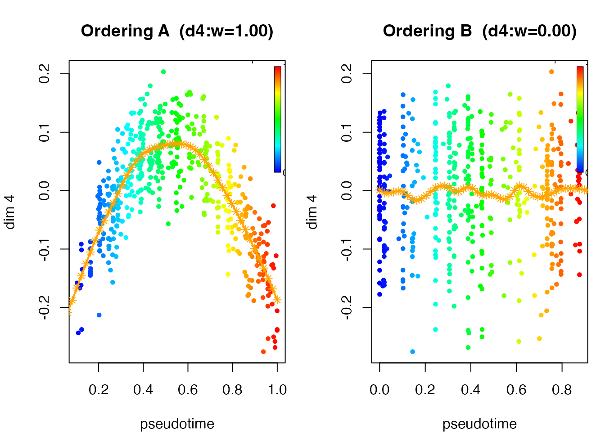
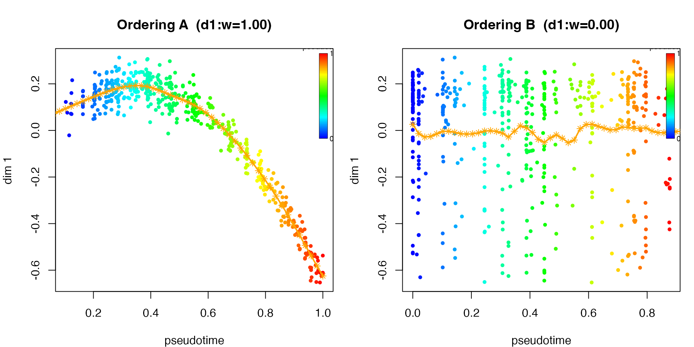

The feature-partition problem
The single-ordering model from vignette("mpcurve_intro")
assumes that all features share one latent sample ordering. In many
applications, however, different groups of features may reflect
different underlying processes, each with its own
ordering.
The partition model with orderings introduces:
- a feature-level assignment ,
- independent latent orderings , ,
- and sets of smooth trajectories .
The observation model becomes:
Each trajectory retains the GMRF prior:
The goal is to recover both the partition (which features belong to which ordering) and the orderings themselves.
This generalises the intrinsic_dim concept from
vignette("mpcurve_intro"): a model with
orderings has intrinsic dimension
.
The standard single-ordering fit is the special case
.
The partition-CAVI algorithm
MPCurver uses a soft partition approach: rather than
assigning each feature to exactly one ordering, it maintains
probabilistic weights
(with
)
describing how much feature
belongs to ordering
.
Per-feature likelihood scores
For each feature and ordering , the assignment update uses the expected log-likelihood score which expands to
Soft weights via annealed softmax
Under the default fixed-uniform assignment prior, the feature weights are updated via a softmax at temperature :
If assignment_prior = "dirichlet", the score is
augmented by the current variational expectation of the ordering-usage
weights:
with
Each CAVI ordering update uses feature-weighted responsibilities: the contribution of feature to ordering is scaled by .
The annealing schedule starts at and decreases geometrically to . At high temperature, all features contribute more evenly across orderings; as , the weights sharpen toward hard assignments.
Full variational objective
Under the default fixed-uniform prior, the partition objective is
With assignment_prior = "dirichlet", the fixed term
-d log M + T H(w) is replaced by the full variational
assignment block
In both cases, if lambda_sd_prior_rate > 0, the
recorded objective also includes the induced prior contribution
so the stored
objective_history remains aligned with the actual penalized
updates.
Fitting via fit_mpcurve()
The main entry point for partition models is
fit_mpcurve() with intrinsic_dim = M. This
returns an mpcurve object with the full S3 interface, just
like a single-ordering fit.
Simulated example
We simulate a dataset where 8 features follow ordering A and 8 follow ordering B:
sim <- simulate_dual_trajectory(
n = 500,
d1 = 10,
d2 = 10,
d_noise = 0,
sigma = 0.05,
trajectory_family = c("quadratic", "monotone"),
seed = 1
)
X <- sim$X
truth <- sim$true_assign
cat("Data dimensions:", nrow(X), "x", ncol(X), "\n")
#> Data dimensions: 500 x 20
cat("True partition:\n")
#> True partition:
print(table(truth))
#> truth
#> A B
#> 10 10Fitting with intrinsic_dim = 2
fit_partition <- fit_mpcurve(
X,
intrinsic_dim = 2,
method = "PCA",
K = 50,
rw_q = 2,
verbose = FALSE
)The result is an mpcurve object with
intrinsic_dim = 2, containing:
-
$fits: list of 2 single-orderingmpcurvefits -
$partition$pi_weights: matrix of soft feature weights -
$partition$assign: hard assignment for each feature ("A"or"B") -
$objective_history: partition objective trace
plot(fit_partition, plot_type = "elbo")
Visualising the fitted mpcurve object.
plot(fit_partition, dims = 4)
Visualising the fitted mpcurve object.
Checking the objective
For a fixed intrinsic_dim = M, the recorded partition
objective is the main trace to inspect. Away from freeze events it
should behave monotonically under the phase-2 updates. If an iteration
freezes one or more weak orderings, the objective for that step is still
recorded, but that step is skipped for convergence accounting and can
show a small decrease.
has_drop <- any(diff(fit_partition$objective_history) < -1e-8)
cat("Any recorded decreases:", has_drop, "\n")
#> Any recorded decreases: FALSE
print(fit_partition$convergence_info)
#> $criterion
#> [1] "phase-2 rel_delta < 1.0e-05 for 3 consecutive nonnegative steps after at least 3 phase-2 iterations"
#>
#> $tol_outer
#> [1] 1e-05
#>
#> $phase2_iters
#> [1] 100
#>
#> $last_delta
#> [1] 0.1527344
#>
#> $last_rel_delta
#> [1] 1.266074e-05
#>
#> $consecutive_small_steps
#> [1] 0
#>
#> $min_phase2_iter
#> [1] 3
#>
#> $consecutive_required
#> [1] 3
#>
#> $converged
#> [1] FALSE
#>
#> $reason
#> [1] "Stopped after 100 phase-2 iterations without meeting the 3-step convergence rule (last rel_delta=1.266e-05)."
plot(fit_partition$objective_history, type = "b", pch = 19, cex = 0.7,
xlab = "Iteration",
ylab = "Variational objective",
main = "Soft partition objective")Variational objective over iterations.
The absolute value of $objective_history is most useful
when comparing fits under the same prior settings. Its
interpretation now depends on drop_unused_ordering:
- If
drop_unused_ordering = FALSE, the stored objective is the fixed-requested-Mcomparison objective. Frozen orderings keep their preserved feature-assignment weights and cell-ordering block, while their trajectoryUcontribution is neutralized to zero. This is the mode to use when comparing fits across requested values ofintrinsic_dim. - If
drop_unused_ordering = TRUE, the stored objective is the post-drop fitting objective of the active model. It is useful for monitoring that fit, but should not be compared across requested values ofintrinsic_dim.
Even in comparison mode, $objective_history is still a
variational objective, not a calibrated marginal likelihood.
Visualising both orderings
plot() shows one panel per ordering, each coloured by
that ordering’s pseudotime. The title annotates the mean feature weight
for the plotted dimensions:
plot(fit_partition, dims = 1)
Both orderings side by side.
Partition accuracy
pred_assign <- as.character(fit_partition$partition$assign)
truth_assign <- as.character(truth)
soft_acc <- max(
mean(pred_assign == truth_assign),
mean(pred_assign != truth_assign)
)
cat("Soft partition accuracy:", round(soft_acc, 4), "\n")
#> Soft partition accuracy: 1Compute the correlation between the inferred pseudotimes and the true orderings:
cor1 <- cor(fit_partition$fits[[1]]$locations$mean$pseudotime , sim$t2)
cor2 <- cor(fit_partition$fits[[2]]$locations$mean$pseudotime, sim$t1)
cat("Correlation with true orderings:\n")
#> Correlation with true orderings:
cat("Ordering 1:", round(cor1, 4), "\n")
#> Ordering 1: 0.0454
cat("Ordering 2:", round(cor2, 4), "\n")
#> Ordering 2: 0.0362Continuing a fit
Use do_mpcurve() to run additional convergence
iterations at
:
fit_partition <- do_mpcurve(fit_partition, iter = 10)This extends $objective_history in place, just like for
single-ordering fits.
Initialisation and methods
By default, partition fits now use
partition_init = "similarity", which first clusters
features and then initializes one ordering per feature block.
If you explicitly choose
partition_init = "ordering_methods", ordering 1 uses the
method argument (same as fit_mpcurve() for
intrinsic_dim = 1), and orderings 2, 3, … use successive
PCA components (PC2, PC3, …) to ensure diverse initialisation rather
than duplicating the first axis.
You can specify independent methods for each ordering:
# Ordering 1: fiedler, ordering 2: PCA (PC1)
fit2 <- fit_mpcurve(X, intrinsic_dim = 2,
method = c("fiedler", "PCA"),
K = 16)For , extend the vector accordingly:
# Three orderings with different initialisations
fit3 <- fit_mpcurve(X, intrinsic_dim = 3,
method = c("fiedler", "PCA", "PCA"),
K = 16)Greedy dimension selection
Dimension selection is now unified under the partition-CAVI workflow
through fit_mpcurve(greedy = ...).
-
greedy = "forward"treatsintrinsic_dimas an upper bound and comparesMversusM + 1sequentially starting fromM = 1. -
greedy = "backward"first fits the upper bound, then removes one active ordering at a time and comparesMversusM - 1.
Both greedy modes always compare models using the
fixed-requested-M comparison objective, so they internally
run with drop_unused_ordering = FALSE even if you ask for a
compact final returned view.
fit_forward <- fit_mpcurve(
X,
intrinsic_dim = 4,
greedy = "forward",
K = 16,
drop_unused_ordering = FALSE,
verbose = FALSE
)
fit_backward <- fit_mpcurve(
X,
intrinsic_dim = 4,
greedy = "backward",
K = 16,
drop_unused_ordering = TRUE,
verbose = FALSE
)
summary_tbl <- data.frame(
fit = c("soft (fixed M=2)", "greedy forward", "greedy backward"),
displayed_dim = c(
fit_partition$intrinsic_dim,
fit_forward$intrinsic_dim,
fit_backward$intrinsic_dim
),
selected_dim = c(
fit_partition$requested_intrinsic_dim,
fit_forward$greedy_selection$selected_intrinsic_dim,
fit_backward$greedy_selection$selected_intrinsic_dim
)
)
print(summary_tbl, row.names = FALSE)
#> fit displayed_dim selected_dim
#> soft (fixed M=2) 2 2
#> greedy forward 2 2
#> greedy backward 2 2
assignment_heatmap(
truth = truth,
soft = fit_partition$partition$assign,
forward = fit_forward$partition$assign,
backward = fit_backward$partition$assign,
main = "Feature partition comparison"
)True vs inferred feature partitions.
Key parameters
fit_mpcurve() with
intrinsic_dim >= 2
| Parameter | Default | Description |
|---|---|---|
intrinsic_dim |
1 |
Number of orderings ; in greedy modes this is an upper bound |
greedy |
"none" |
Optional dimension-selection mode: "forward" or
"backward"
|
method |
"PCA" |
Length-1 or length- vector of initialisation methods per ordering |
K |
auto | Number of grid points per ordering |
n_outer |
25 |
Annealing iterations ( decreases geometrically) |
max_converge_iter |
100 |
Post-annealing iterations at |
tol_outer |
1e-5 |
Phase-2 relative objective tolerance; requires 3 consecutive small nonnegative steps |
T_start / T_end
|
5 / 1
|
Temperature schedule endpoints |
inner_iter |
1 |
Weighted CAVI sweeps per outer step |
Tips
-
Use
fit_mpcurve(intrinsic_dim = M)as the main entry point. It returns a unifiedmpcurveobject and handles all initialisation automatically. -
Use
greedy = "forward"or"backward"whenintrinsic_dimis only an upper bound. Greedy search always compares models with the fixed-Mobjective. -
Start with
intrinsic_dim = 2. If the partition is unclear, consider to allow a third ordering to capture residual structure. -
Specify independent init methods.
method = c("fiedler", "PCA")uses a spectral ordering for the first axis and PC1 for the second explicit PCA-based ordering. If you want later PCA axes as explicit starts, passpca_componentsdirectly. - Non-monotone features are harder. When many features have non-monotone relationships with the latent ordering, results become more initialisation-sensitive.
- Partitioning is easier than trajectory recovery. Even when the inferred orderings are imperfect, the feature partition can still be accurate.
-
Check the objective trace. Within one fixed
intrinsic_dim, sustained decreases are a red flag; a one-step drop on a freeze-affected iteration is possible and is excluded from convergence accounting. -
Compare across
intrinsic_dimonly withdrop_unused_ordering = FALSE. In that mode the stored objective keeps the fixed requested-Mcomparison semantics. Withdrop_unused_ordering = TRUE, it becomes a post-drop fit objective and should not be compared across requested dimensions.
Summary
-
fit_mpcurve(X, intrinsic_dim = M)is the primary entry point for partition models, returning anmpcurvewithintrinsic_dim = M. -
fit_mpcurve(..., greedy = "forward")andfit_mpcurve(..., greedy = "backward")provide the unified dimension selection workflow going forward. -
print(),summary(), andplot()all work out of the box:plot()shows panels, one per ordering, coloured by pseudotime. -
do_mpcurve()continues fitting at and extends the objective history, identical to the single-ordering interface. - All methods build on the same CAVI trajectory model from
vignette("mpcurve_intro").